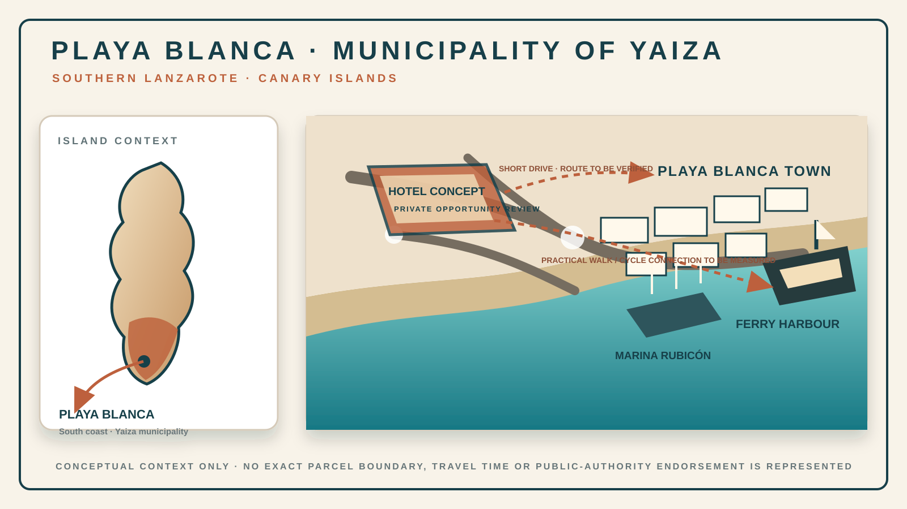
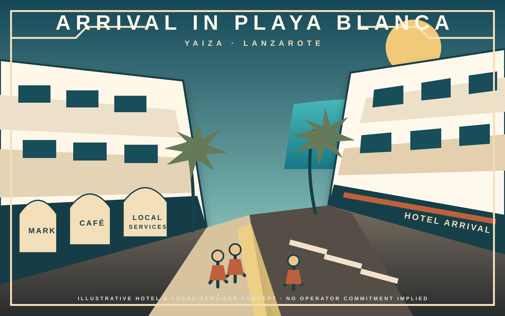
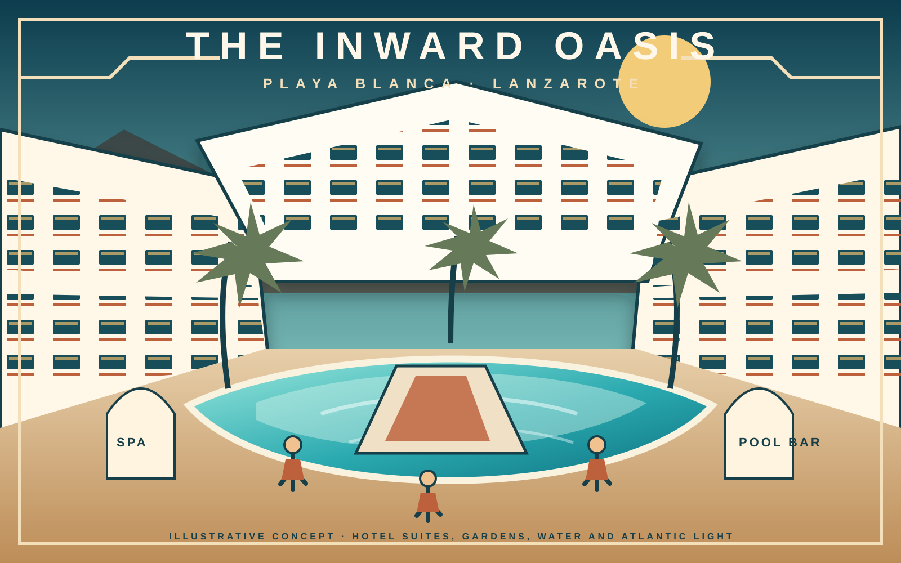
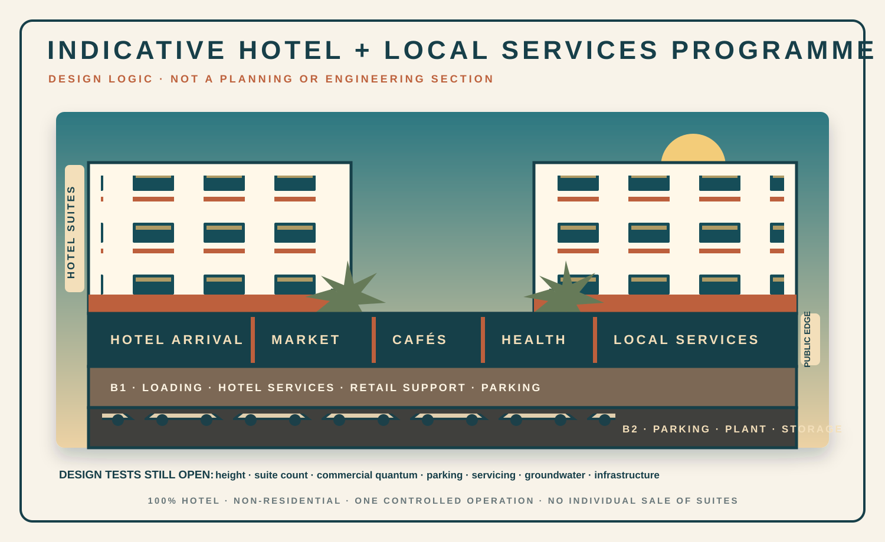

Playa Blanca · municipality of Yaiza · southern Lanzarote
A new hotel and local-services concept for a place we continue to believe in.
Aweswell is exploring a separate, 100% hotel and non-residential development within Playa Blanca’s urban area: an inward-facing resort of suites, gardens and water, with a useful outward edge of food, hospitality and local services.
Town · ferry harbour · Atlantic coast · volcanic landscape
Place before product
Playa Blanca is the coastal town. Yaiza is the municipality.
The distinction matters. This concept belongs to the established coastal visitor economy of Playa Blanca, in the municipality of Yaiza and at the southern end of Lanzarote—not to the smaller inland village that also bears the municipal name.
Connected to a real town and port.
The opportunity area is being assessed as part of Playa Blanca’s urban fabric, a short drive from the town centre and ferry harbour. A practical walking and cycling connection is part of the design test; exact routes and journey times will be published only after access and survey verification.
The intended relationship is simple: the hotel should be a destination in its own right, while its public edge should feel useful to the wider Playa Blanca community rather than sealed off from it.
Geographic boundary: the diagram is schematic. No exact parcel boundary, sightline or travel time is represented on this public page.

Confidence with measurable foundations
A destination with scale, occupancy and movement.
The figures do not prove the viability of this particular concept. They explain why Playa Blanca and Lanzarote remain serious long-term hospitality markets and why Aweswell is prepared to commit development resources there again.
Sources: Lanzarote Data Centre, Lanzarote en Cifras 2025; Playa Blanca port passenger data. Source-year indicators are contextual, not a forecast or financial promotion.
The development proposition
Useful on the outside. A resort world on the inside.
The concept is a single hotel operation—not residential apartments—with an active public-facing ground level and a protected internal landscape of pools, planting, terraces and Atlantic light.
One controlled hospitality operation
Approximately 280–302 one-bedroom hotel suites are the current design ambition, subject to planning and gross-area testing.
- Typical suite reference: approximately 48 m² usable interior plus terrace or balcony.
- No individual sale of suites.
- No residential horizontal division or permanent occupation rights.
Gardens, shade and water
Bedrooms and living areas face a calm internal resort environment with connected pools, planted walks, shaded terraces, restaurants, wellness and family or quieter zones.
Commercial space with local utility
Potential uses under demand and planning review include cafés, restaurants, food retail, health or pharmacy services, parcel collection, tourist services, laundromat, fitness and flexible local retail.
Preferred food-anchor study: a Supercor Exprés or Supercor-format proposition, subject to operator interest, a separate commercial agreement and planning approval. No affiliation, negotiation or commitment by El Corte Inglés Group is represented. Public visuals therefore use neutral “Market” signage.



One building, clearly separated operations
Hotel above. Public life at ground. Logistics below.
The base design assumes no more than two basement levels until geotechnical and hydrogeological evidence supports anything deeper.
01
Hotel accommodationSuites, terraces, galleries and resort facilities above the public edge.
02
Ground-level public edgeHotel arrival plus outward-facing commercial and service premises.
B1
Support and accessLoading, retail support, hotel back-of-house, services and some parking.
B2
Parking and plantParking, plant, storage and protected service circulation.
Our confidence in Playa Blanca was not taken with it.
Project Sun Rock’s current recovery record concerns Sun Park in Playa Blanca, currently open and trading as MYND Yaiza. Gil Marer and Aweswell continue to pursue, through lawful routes, recovery of the business, assets, income and rights they say were displaced.
This concept is separate: a different opportunity, ownership perimeter and administrative record. It is not presented as compensation, a replacement asset or a project known to or endorsed by any public authority.
Its connection is one of place and conviction. The destination in which we say we suffered our most serious commercial and patrimonial harm is also a destination in which we remain prepared to originate, capitalise and build again.
Open the separate Sun Park / MYND Yaiza recovery record → See the currently trading hotel’s official site →
Separation rule: nothing on this page connects the owners or counterparties of any new opportunity with the Sun Park dispute. No complaint, evidence, regulatory matter or public-law duty is offered for withdrawal or exchange.
Long-term engagement with place
Existing work in Yaiza and Lanzarote. Separate records, one standard.
Aweswell’s work already engages municipal, insular and regional records concerning ownership, tourism, public information, traceability and recovery. Those engagements are separate from this concept. The common standard is simple: identify authority, distinguish what is approved from what is proposed, and commit capital only against a transparent and defensible route.
Municipal record
Yaiza
Licensing, planning, activity, taxation and documentary traceability in the separate Sun Park/MYND Yaiza record.
Open the municipal record → Insular recordCabildo de Lanzarote
Tourism-file traceability, accommodation-unit perimeter and the distinction between operation and ownership.
Open the tourism record → Private routeHospitality and real assets
A principal-to-principal route for owners, operators, developers and capital partners with a credible control and execution path.
Request a private conversation →Context boundary: these links document separate institutional matters. No awareness, endorsement, approval or consideration of this development concept by Yaiza, the Cabildo, the Canary Islands Government or any other public authority is represented.
Open-kimono development status
The concept is ambitious. Its present status is deliberately precise.
Yaiza has stated that the 2014 planning instrument was annulled, that licence granting was suspended and that the 1973 planning framework must be applied while a new Plan General is prepared. Any real project must therefore establish a current, parcel-specific and legally processable route rather than rely on appearance or historic expectation.
Development visionDefined: 100% hotel, non-residential, inward resort and outward local-services edge.
Site controlNot represented. The public page describes a privately reviewed opportunity, not an acquisition.
Exact parcelNot published. Boundary and ownership remain private pending disclosure rights.
Planning entitlementNot represented. Use, height, buildability, commercial compatibility and parking remain under review.
Building licenceNone is represented for this Aweswell concept.
Tourism authorisationTo be established for the definitive project and operating model.
Hotel operatorNot appointed and no brand affiliation is implied.
Supermarket operatorSupercor Exprés / Supercor is a preferred target study only; no commitment is represented.
Development financeNot committed. The capital programme is expected to be substantial and separately underwritten.
Public-authority positionNo awareness, dialogue, support, approval or outcome concerning this concept is represented.
Planning context: Yaiza Town Council, 22 April 2026; participation in the emerging plan: municipal consultation on the new Plan General.
Private by default
A serious project begins with a controlled conversation.
Relevant owners, hotel operators, food and service occupiers, development specialists and proprietary capital partners may request a private, conflict-checked introduction. This page is not a public investment offer or data room.